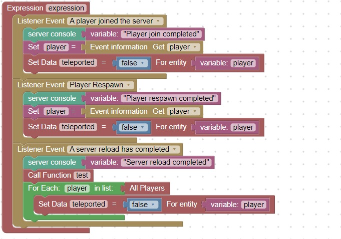
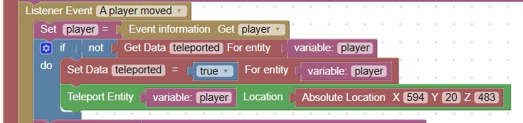

Join Server, Respawn
This code will mark the player for spawn point teleportation they respawn, join the server, or the server is reloaded
It will also call your test function (so you do not need to enter /js test()). You will however need to run the /reload command

When the player moves this code will check if the player needs to be teleported to the spawn point
